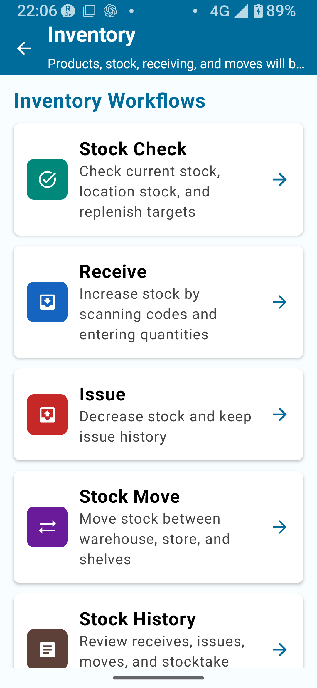
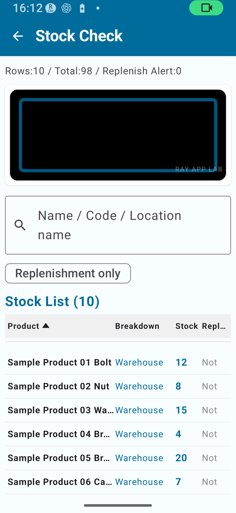
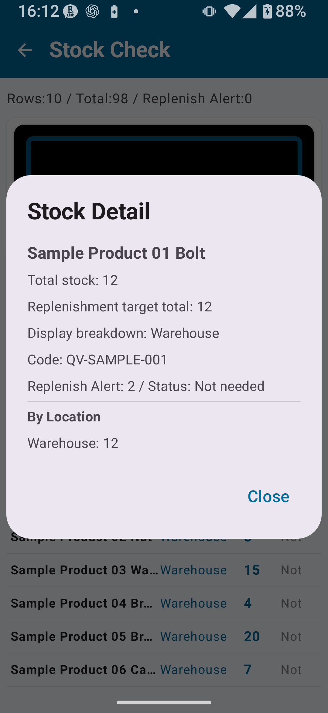

What the free tier can do, stock checking, master data links, receiving, shipping, transfers, CSV, and recommended workflows
Topics covered in this page:
What free tier Inventory Management can do / Main free-tier scope / Stock checking / Stock detail / Master data relationship / Receiving, shipping, and transfers / CSV import and export / Notes for free-tier users / Recommended workflows
CHAPTER 1
Free Tier Inventory Management Overview
Inventory Management tracks product receiving, shipping, and transfers to maintain an accurate picture of current stock levels. In the free tier, you can use stock checking, product master features, receiving, shipping, stock transfer, history review, and CSV import/export.
Main screens in Inventory Management: Stock Check / Receive / Ship / Stock Transfer / Inventory History / Data Import & Export
💡 Stocktake vs. Inventory Management
Inventory Management is for recording daily transactions — receiving, shipping, and transfers — that move stock. It is a separate module from Stocktaking (physically counting items). Do not confuse the two.

Fig. 1-1 Inventory Management Home Screen
CHAPTER 2
Main Free-Tier Scope
Item
Free Tier
Notes
Inventory data volume
Can be registered and used
Consider an unlock if you run large-scale operations
Inventory history
Can be recorded and reviewed
Consider an unlock if you need long-term, high-volume use
CSV import / export
Available
Follow the confirmation screen before importing or exporting
Location Master registration
Not editable in the free tier
Available with Inventory Simple Unlock or any Full Unlock
Direct edit of registered cumulative total
Not available
Any Full Unlock
Product-code / location-code rules
Not available
Any Full Unlock
Advanced CSV settings
Regular import/export is available; follow the screen for advanced settings
Advanced settings are available with Full Unlock
⚠ Note
If your data volume grows or you need advanced settings, check the Simple Unlock or Full Unlock guidance shown in the app.
CHAPTER 3
Stock Checking
The Stock Check screen initially displays the combined stock total per product. The replenishment check is calculated using the total stock across all locations with "Include in replenishment check" turned ON in the Location Master.

Fig. 3-1 Stock Check Screen
What You Can Do in Stock Check
View the current combined stock total for each product
Filter by product name or code with a search
Compare the reorder point against the included-location total to identify items needing replenishment
Tap a product to expand the location-by-location breakdown. In the location breakdown view, the replenishment check is not shown or is treated as inactive
Stock Check Procedure
Tap Inventory Management on the top screen.
Open Stock Check.
Find the product you want to check (search or scroll through the list).
Tap the product to view stock detail.
CHAPTER 4
Stock Detail
Tapping a product in the Stock Check screen opens the Stock Detail screen.

Fig. 4-1 Stock Detail Screen
What You Can See in Stock Detail
Product code and name
Total stock quantity
Stock breakdown by location
Reorder point and price (if registered in the Product Master)
Category
CHAPTER 5
Master Data Relationship
Inventory Management works in conjunction with the Product Master, Category Master, and Location Master. Keeping accurate information in master data improves the quality of your inventory records.
Master
Main Role
Key Fields
Product Master
Register products that hold physical stock
Product code/barcode, product name, category, price, reorder point
💡 Product vs. Category
A product is an individual item that holds inventory (e.g., T-shirt, red, size M). A category is a grouping used to classify products (e.g., Apparel). Don't confuse the two.
⚠ Locations in the Free Tier
In the free tier, use the basic locations such as "Warehouse" and "Store". If you need detailed location registration or additional location management, consider Inventory Simple Unlock or above.
CHAPTER 6
Receiving, Shipping & Transfer Availability
Receiving, shipping, and stock transfer are available in the free tier. Stock transfer is used when the required conditions are met, such as having a product, available stock, and at least two locations.
🔍 Free Tier Availability
Receiving, shipping, and stock transfers may have free-tier limits. Follow the guidance shown in the app, especially when a limit notice or paid-tier prompt appears.
Guidance for Receiving, Shipping & Transfers in the Free Tier
Function buttons may be shown when the operation is available.
Stock transfer cannot be completed if the source and destination are the same or if there is no stock to move.
Follow the instructions shown on-screen.
When receiving an unregistered product code, a prompt to create a new Product Master entry may appear.
The stock field on the shipping screen displays current stock for reference — it is not an editable input field.
💡 Tip
If you need large datasets or detailed location/CSV operations, consider Simple Unlock or Full Unlock.
CHAPTER 7
CSV Import / Export
CSV import, export, and backup are available in the free tier. Always review the contents before running an operation, and back up important data.
Item
Free Tier
Simple Unlock
Full Unlock
Export records
Available; follow the in-app guidance
Available; follow the in-app guidance
Available with advanced settings
CSV import records
Available; confirm before import
Available; confirm before import
Available with advanced settings
Full backup CSV (all data)
Available; follow the in-app guidance
Available; follow the in-app guidance
Available with advanced settings
⚠ Note
CSV import/export can make large changes to stock. Follow the confirmation screen, and check Full Unlock guidance if you need advanced CSV settings.
CHAPTER 8
Notes for Free-Tier Users
Feature
Required Plan
Large-scale continuous operation
Consider Simple Unlock or Full Unlock as needed
Stable long-term history operation
Consider Simple Unlock or Full Unlock as needed
Large CSV operation
Follow in-app guidance and consider an unlock as needed
Lock screen rotation
Inventory Simple Unlock or above
Detailed Location Master registration
Inventory Simple Unlock or above, or any Full Unlock
Direct edit of registered cumulative total
Any Full Unlock
Product-code / location-code rules
Any Full Unlock
Extended CSV export
Any Full Unlock
Apply stocktake data to inventory
Follow the inventory confirmation screen and conditions
CHAPTER 9
Recommended Workflow for Free Tier Users
Use for Stock Checking with a Small Product Range
If you have 30 or fewer products, the free tier supports ongoing stock checking. It's useful for monitoring stock levels and checking against reorder points.
Practice with Sample Data
Create sample data from the Settings screen to get practice products and stock data ready. We recommend familiarizing yourself with the operations before registering real data.
Export CSVs Regularly to Build a Record
Export to CSV while you're still within the 30-record export limit, and accumulate your inventory records in a PC or spreadsheet.
Plan to Upgrade When Approaching the Limit
When your product and history counts approach 30, consider upgrading to Inventory Simple Unlock.
💡 Consider Upgrading to Simple Unlock If You…
Have more than 30 products
Want to keep receiving and shipping history long-term
Want to use separate locations (warehouse and store)
📌 Chapter Highlights
Inventory Management records daily transactions (receiving, shipping, transfers). It is separate from Stocktaking.
The free tier can be used for stock checking, receiving, shipping, stock transfer, and CSV import/export.
Stock Check shows current stock totals by product, location breakdown, and items needing replenishment.
Inventory Management works in conjunction with Product, Category, and Location master data.
Receiving, shipping, and stock transfer change stock directly; confirm the target product, quantity, and location before saving.
Plan a move to Simple Unlock or Full Unlock if your product or history volume grows.
🔍 Notes Before Use
Receiving, shipping, and stock transfers change stock directly. Check the details before saving.
Location Master registration and detailed location management may require the applicable paid tier.
When exporting backup CSVs or other data, follow the current screen guidance and check the exported files.
When applying stocktake data to inventory, check the inventory confirmation screen and conditions, and export a backup before using it.
Check the latest in-app display for the stock detail screen before using the data operationally.